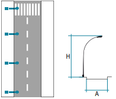

Alumbrado Público
Sistemas de iluminación exterior municipal según el Manual de Bomberos del Ayuntamiento de Madrid
🏙️ Definición y Características del Alumbrado Público
Definición
Servicio de alumbrado exterior destinado a iluminar zonas como carreteras, calles, plazas, parques, monumentos, jardines y demás espacios de libre circulación dentro del ámbito municipal.
Servicio de alumbrado exterior destinado a iluminar zonas como carreteras, calles, plazas, parques, monumentos, jardines y demás espacios de libre circulación dentro del ámbito municipal.
Propiedad
La instalación de alumbrado público es propiedad del municipio. Desde los centros de mando nace la línea trifásica que suministra 400/230 V a los distintos elementos del alumbrado.
La instalación de alumbrado público es propiedad del municipio. Desde los centros de mando nace la línea trifásica que suministra 400/230 V a los distintos elementos del alumbrado.
Alimentación
Desde los Centros de Transformación (CT) nace la Red de Distribución en BT que suministra tanto a las acometidas de los edificios como a la instalación de alumbrado público dentro de cada municipio.
Desde los Centros de Transformación (CT) nace la Red de Distribución en BT que suministra tanto a las acometidas de los edificios como a la instalación de alumbrado público dentro de cada municipio.
Distribución de fases
Los puntos de luz se conectan en paralelo a la línea de alimentación, alternando la fase a la que se conectan puntos de luz consecutivos. Esto permite una compensación de fases, manteniendo el sistema trifásico equilibrado y evitando sobrecargar una fase respecto a las demás.
Los puntos de luz se conectan en paralelo a la línea de alimentación, alternando la fase a la que se conectan puntos de luz consecutivos. Esto permite una compensación de fases, manteniendo el sistema trifásico equilibrado y evitando sobrecargar una fase respecto a las demás.
📐 Tipos de Distribución Según Montaje

Unilateral
Puntos de luz en un mismo lado de la vía. Se usa cuando la anchura A de la calzada ≤ altura H de montaje.

Bilateral Tresbolillo
Puntos de luz en ambos lados en zigzag. Se usa cuando A = 1 a 1.5 H (óptimo 1 a 1.3 H).

Bilateral Pareado
Puntos de luz opuestos en ambos lados. Se usa cuando A > 1.5 H (óptimo > 1.3 H).

Central o Axial
Puntos de luz en medianas (1-3 m de ancho) con báculos de doble brazo. Para medianas > 3 m se estudia como dos calzadas independientes.
Variables de diseño
A = Anchura de la calzada
H = Altura de montaje de las luminarias
A = Anchura de la calzada
H = Altura de montaje de las luminarias
🏢 Centros de Mando
Definición
Elementos de la instalación que actúan como central para todo el sistema. Contienen los mecanismos eléctricos que regulan, protegen y distribuyen las líneas que dan servicio a los puntos de luz del municipio (ITC- BT-09).
Elementos de la instalación que actúan como central para todo el sistema. Contienen los mecanismos eléctricos que regulan, protegen y distribuyen las líneas que dan servicio a los puntos de luz del municipio (ITC- BT-09).
Sistemas de accionamiento
• Interruptores horarios (programadores)
• Sensores crepusculares (cambio de luz)
• Sistemas de telecontrol remoto
• Interruptor manual (independiente de los sistemas automáticos)
• Interruptores horarios (programadores)
• Sensores crepusculares (cambio de luz)
• Sistemas de telecontrol remoto
• Interruptor manual (independiente de los sistemas automáticos)
Componentes principales
Interruptor Horario
Programador que controla automáticamente el encendido y apagado del alumbrado
Interruptor Crepuscular
Dispositivo que controla circuitos de iluminación según cambios de luz natural
Interruptor Diferencial
Protege contra contactos indirectos. Generalmente de 30 mA o 300 mA
Contactor
Elemento electrónico que establece o interrumpe la corriente según señales externas
Interruptor corte omnipolar
Contra sobreintensidades, corrientes de defecto a tierra, y sobretensiones.
💡 Puntos de Luz
Definición
Elementos encargados de transformar la energía eléctrica en energía lumínica.
Elementos encargados de transformar la energía eléctrica en energía lumínica.
Componentes
• Lámpara: Dispositivo que produce la luz
• Luminaria: Conjunto de elementos para soporte, fijación y protección
• Lámpara: Dispositivo que produce la luz
• Luminaria: Conjunto de elementos para soporte, fijación y protección
Ubicaciones
• Farolas (elementos más representativos)
• Fachadas
• Semáforos
• Marquesinas
• Farolas (elementos más representativos)
• Fachadas
• Semáforos
• Marquesinas
PRECAUCIÓN CON SEMÁFOROS
A diferencia de las farolas, los semáforos no tienen cajas portafusibles. Los cables van directamente desde el cuadro de mando. No se recomienda manipular los cables de alimentación de los semáforos para evitar cruces que provoquen accidentes.
A diferencia de las farolas, los semáforos no tienen cajas portafusibles. Los cables van directamente desde el cuadro de mando. No se recomienda manipular los cables de alimentación de los semáforos para evitar cruces que provoquen accidentes.
PRECAUCIÓN CON MARQUESINAS
Tienen en su lateral izquierdo un bastidor con automático, diferencial y borna de tierra de las masas metálicas. Aunque no están iluminadas, a efectos de seguridad, debemos considerarlas siempre bajo tensión.
Tienen en su lateral izquierdo un bastidor con automático, diferencial y borna de tierra de las masas metálicas. Aunque no están iluminadas, a efectos de seguridad, debemos considerarlas siempre bajo tensión.
🌍 Puesta a Tierra
Requisitos según REBT
La puesta a tierra de los soportes se realizará por una conexión común para todas las líneas que partan del mismo centro de mando.
La puesta a tierra de los soportes se realizará por una conexión común para todas las líneas que partan del mismo centro de mando.
Distribución de electrodos
• Mínimo un electrodo de puesta a tierra (pica) cada 5 soportes
• Siempre en el primer y último soporte de cada línea
• Todas las farolas (báculo y mural) con toma de tierra conectada a la red
• Mínimo un electrodo de puesta a tierra (pica) cada 5 soportes
• Siempre en el primer y último soporte de cada línea
• Todas las farolas (báculo y mural) con toma de tierra conectada a la red
Elementos de una farola
• Poste galvanizado
• Lámpara con balasto
• Tapa de fundición
• Arqueta de inspección
• Base de hormigón
• Toma de puesta a tierra en arqueta
• Toma de puesta a tierra en farola
• Poste galvanizado
• Lámpara con balasto
• Tapa de fundición
• Arqueta de inspección
• Base de hormigón
• Toma de puesta a tierra en arqueta
• Toma de puesta a tierra en farola
🔆 Tipos de Lámparas en Alumbrado Público
Estadísticas del Ayuntamiento de Madrid
Las lámparas que más habitualmente encontraremos en el municipio son de dos tipos: LED y Vapor de Sodio de Alta Presión.
Las lámparas que más habitualmente encontraremos en el municipio son de dos tipos: LED y Vapor de Sodio de Alta Presión.
Lámparas LED
• Diodos controlados por chips con alto flujo de reflexión
• Alta eficiencia y reducción del consumo energético
• Agrupados en placas utilizadas en alumbrado público
• Requieren un driver que convierte corriente alterna (AC) en continua (DC)
• Similar a un cebador para sistemas fluorescentes
• Alta eficiencia y reducción del consumo energético
• Agrupados en placas utilizadas en alumbrado público
• Requieren un driver que convierte corriente alterna (AC) en continua (DC)
• Similar a un cebador para sistemas fluorescentes
Vapor de Sodio Alta Presión (VSAP)
• Lámpara de descarga de gas que usa vapor de sodio
• Una de las fuentes más eficientes actualmente
• La más utilizada en el municipio
• Proporciona gran cantidad de lúmenes por vatio
• Color de luz amarillo brillante
• Requiere balasto, arrancador o ignitor y capacitor
• Una de las fuentes más eficientes actualmente
• La más utilizada en el municipio
• Proporciona gran cantidad de lúmenes por vatio
• Color de luz amarillo brillante
• Requiere balasto, arrancador o ignitor y capacitor
Componentes VSAP
• Tubo de descarga de cerámica translúcida: Resiste alta corrosión del sodio y altas temperaturas
• Balasto: Necesario por la alta tensión de arranque
• Arrancador o cebador: Con dos electrodos que generan chispa para encender el vapor
• Capacitor: Para compensar el factor de potencia
• Tubo de descarga de cerámica translúcida: Resiste alta corrosión del sodio y altas temperaturas
• Balasto: Necesario por la alta tensión de arranque
• Arrancador o cebador: Con dos electrodos que generan chispa para encender el vapor
• Capacitor: Para compensar el factor de potencia
🔌 Esquema Eléctrico
Alimentación
Desde el centro de mando: línea trifásica 400V con neutro (400/230V)
Desde el centro de mando: línea trifásica 400V con neutro (400/230V)
Conexión de puntos de luz
Los puntos de luz se conectan en paralelo alternando las fases (L1, L2, L3) para mantener el equilibrio del sistema trifásico.
Los puntos de luz se conectan en paralelo alternando las fases (L1, L2, L3) para mantener el equilibrio del sistema trifásico.
Esquema de Conexión
Centro de Mando
L1 | L2 | L3 | N
L1 | L2 | L3 | N
📍 Punto Luz 1 → L1 + N (230V)
📍 Punto Luz 2 → L2 + N (230V)
📍 Punto Luz 3 → L3 + N (230V)
📍 Punto Luz 4 → L1 + N (230V)
📍 Punto Luz 5 → L2 + N (230V)
Alternancia de fases para equilibrio del sistema trifásico
🔧 Reconocimiento de Material Eléctrico
DPN
Interruptor automático magnetotérmico de dimensiones reducidas, de un polo más neutro. Todos son de 2 polos y cortan fase y neutro. Ocupan un módulo en carril DIN.
Borna Neutro
Conexión de neutro para carril DIN. Borna empotrada de conexión por tornillo. Contactos para derivar energía.
Interruptor Crepuscular
Controla circuitos de iluminación según cambios de luz natural (noche/día). Usado para encender/apagar cargas como alumbrado público.
Conector Vampiro
Conector de perforación con tres dientes que muerden el cable para realizar derivaciones. Usable en interiores y exteriores (líneas aéreas BT).
Transformador
Elemento que permite aumentar o disminuir la tensión. Posee devanado primario (mayor tensión), secundario (menor tensión) y núcleo magnético.